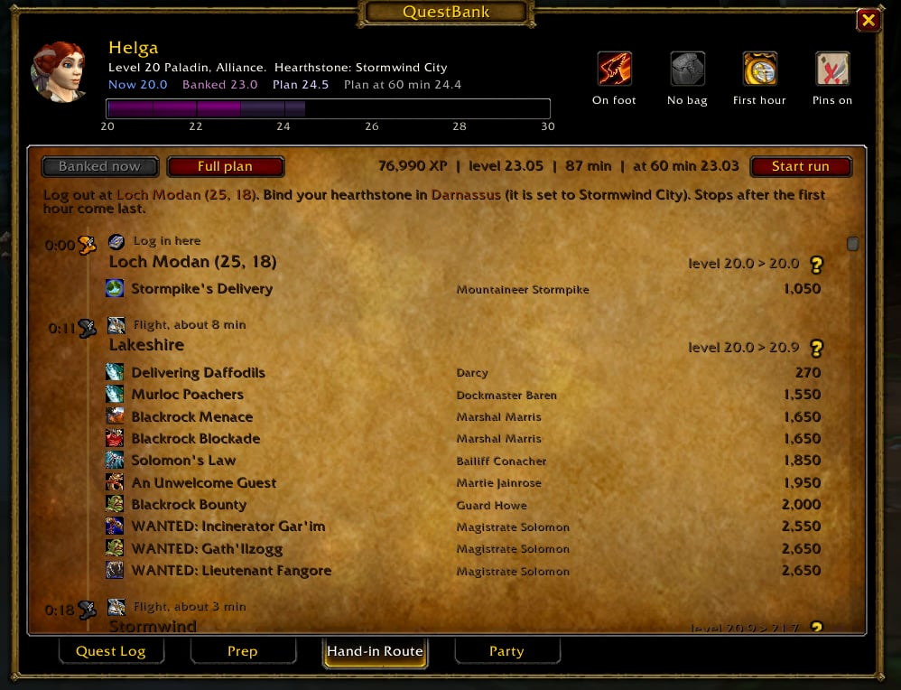
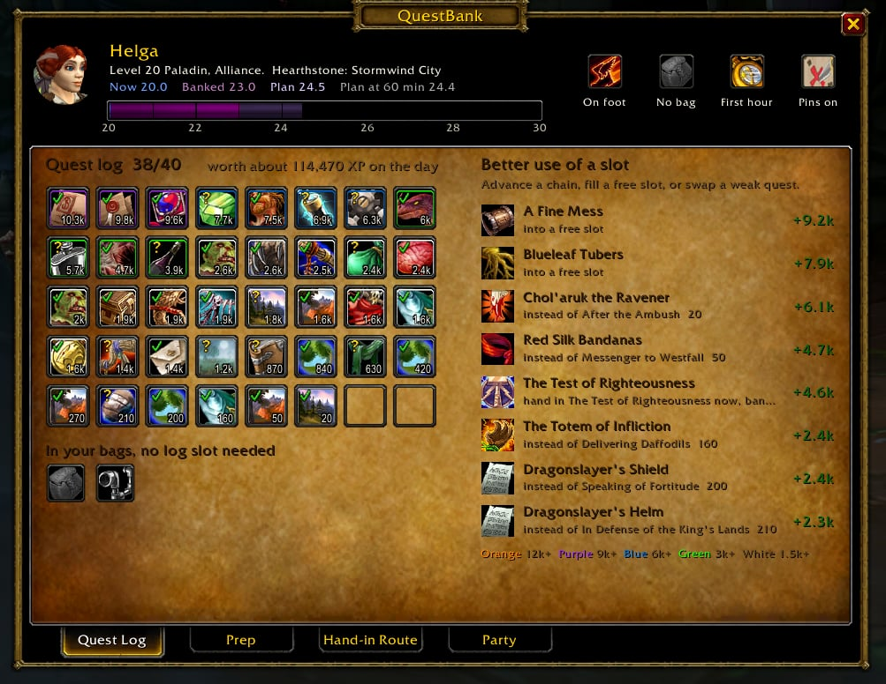
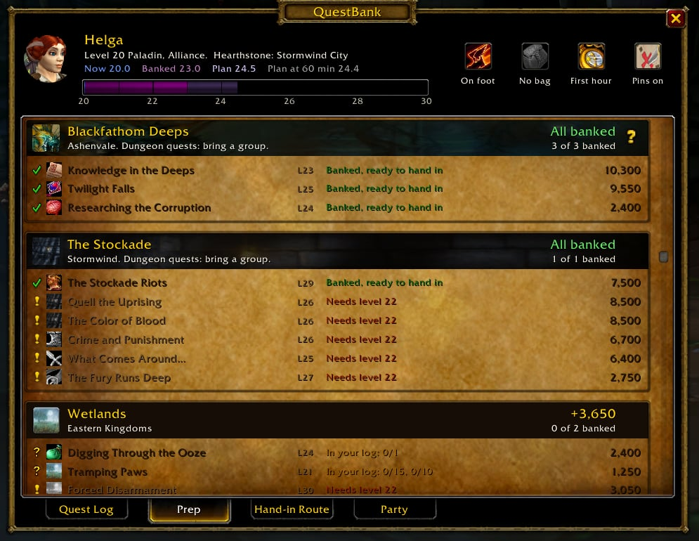
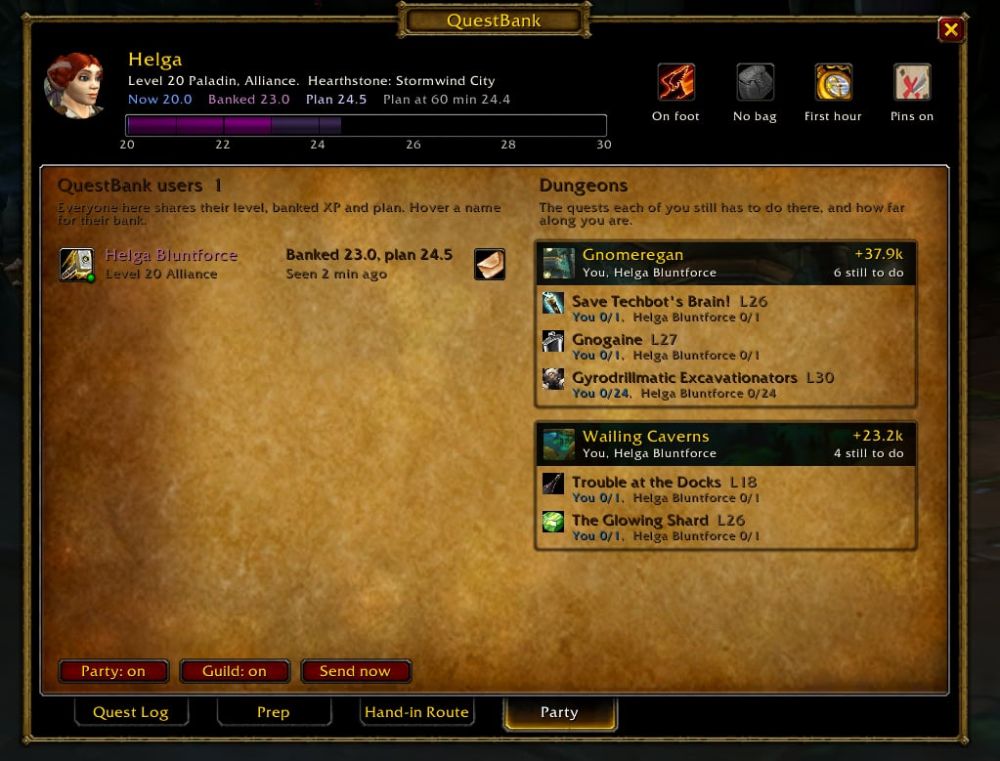

AddonFree · Level 1 to 60 · WoW Forever
QuestBank
In Forever, quests are where the XP is: dungeon quests pay up to 2.675 times their Classic XP (4.35 until Blizzard halved the extra on 1 October 2026). QuestBank shows what every quest in your log is worth at your level, which chains to carry on, the best quests near you, and the quickest way to hand them in, with map pins. When the game holds your level at a cap, it banks your log and plans the hour after the cap goes up. Alliance and Horde, and it plans dungeon runs with your party.

Install
Up and running in a minute
Download and unzip
You get one folder, QuestBank. Inside are twelve files, all plain text.
Put it in AddOns
Move the folder into the Forever beta's Interface\AddOns. That's the same folder the other beta addons use, so you end up with Interface\AddOns\QuestBank\QuestBank.toc.
Log in and type /qb
The window opens on your quest log. A book button on the minimap does the same. Replacing an older QuestBank? Delete the old folder first; your plan and settings are kept.
If the character screen lists it as out of date, tick Load out of date AddOns. Blizzard hasn't published Forever's interface number yet.
Every level
Questing, banking and the rush
QuestBank works out which of the three applies to you, and weighs quests differently in each: banking chases raw XP to bank, questing chases XP for the time, what's close and what leads on to more. Settings lets you choose a mode yourself.
Questing
You can level, so you hand quests in as you go. QuestBank values your log at your level, marks the chains worth carrying on with a green arrow, suggests the best quests near you, and plans the quickest way to hand in what's finished, from where you stand.
Banking
The game holds your level at a cap. QuestBank sees it (or learns it the first time a hand-in pays nothing) and switches to banking: finish quests, keep them, and plan the hour after the cap goes up, with where to log out and where to bind your hearthstone.
The rush
The cap goes up. Your first hand-in starts the run: a clock, every quest ticked off with the XP it paid, and the rest of the route planned again from where you stand. When you end the run, it's back to questing.
Optional
Share what you discover
Forever is still being discovered: quests move, pay more or less than in Classic, and new ones turn up above every cap. QuestBank notes what the game shows you as you play, uses it for you straight away, and keeps it in its own saved file: who gives and takes each quest and where they stand, what each quest paid at your level, which quests an NPC offers at what level, and chain steps. No player, guild or realm names. Send those notes in, and they go into the next QuestBank release for everyone.
Upload your notes
Your notes are in WTF\Account\<account>\SavedVariables\QuestBank.lua under the game folder, written when you log out or /reload. Drop that file here. A ForeverProbe export (the text /probe export shows, starting FPROBE2:) or its ForeverProbe.lua works the same way.
No account, no login. The same file can be sent again after every session; only what's new counts.
Or let ForeverProbe do it
ForeverProbe is our second addon, never required: a small pace bar (XP per hour, time to level), a snapshot of your character at login and level-up, and QuestBank's notes in one export. On Windows, the Companion in the same download watches both saved files and uploads them here on its own every 30 minutes. Nothing to type, no key, no account; one readable script.
ForeverProbe's file carries your character's name and level with its snapshots; QuestBank's carries no names at all. More about ForeverProbe.
A tour of the window
What every part does
Screenshots from the beta, a level 20 Alliance paladin banking for the next cap. The numbers on a picture match the list beside it; where a screenshot doesn't show a part, the illustration folded underneath does, with example numbers.
Illustration
The parchment holds whichever page the tabs underneath have open: your Quest Log, Plan, the Hand-in Route, your Party or Settings. The other tour tabs above show each one.
In game
- You and your hearthstone. Your portrait, level, faction, and where your hearthstone is bound right now. Everything below follows your own character: faction, class and race.
- The XP bar. Your next ten levels while questing; from the lock to the next cap while banking (20 to 30 in the picture). Blue is where you are now. Purple is where you land after handing in what's finished. Pale is where the full plan takes you. The numbers above it spell that out, and while banking, your level at the 60-minute mark too.
- Mounted or on foot. It reads your riding skill. A mount cuts every run between NPCs to 62%, which changes both the clock and the best order. Click to set it yourself, right-click to go back to automatic.
- The sleeping bag switch is gone since 3.4.7. The level-30 build changed Well Rested: it speeds up your rested XP instead of adding 3% to quest hand-ins, so the plan no longer counts it. Older screenshots still show the switch.
- The third switch. While banking: plan for the first hour (the order that leaves you highest at minute 60) or the whole route (the highest level at the end); right-click it to stop banking. While questing it reads Questing; click it to bank anyway.
- Map pins. Numbered pins on your world map for every stop of the route, and a ! where the quests you plan to fetch start. Click to turn them on or off, right-click for a waypoint on the next stop.
- Five pages. Quest Log, Plan, Hand-in Route, Party and Settings, like the tabs under the character window.
In game

1 2 4 5The illustration, with example numbers
- Your 40 slots, best first. Every quest in your log, sorted by what it pays at your level (on the day, while banking). The border colour follows item quality, from grey under 1,500 XP to orange over 12,000. The number is the XP.
- A mark on each slot. Green: finished. Yellow: not finished yet. Red: you cut it from the plan, or QuestBank doesn't know the quest. Shift-click a slot to cut it or keep it.
- The green arrow: carry the chain on. The game's own bag upgrade arrow, on quests that lead somewhere. Questing, it marks the chains worth doing, and the tooltip says what the chain leads to and what the best step further on pays. While banking it only shows where a later step pays more than this one: hand this one in now and bank that step instead. The others are plain hand-ins.
- Items that don't need a slot. Items that start a quest can wait in your bags without taking a log slot until the cap goes up. The count shows how far along you are, like 4 of 10 Bloodied Insignias. Below them, QuestBank lists any quest that left your log without a hand-in, so an accidental abandon doesn't go unnoticed.
- Better use of a slot. Three kinds of move; banking, the biggest gain first; questing, the best gain for the time. Advance a chain: you hold one step, a later step pays more, so hand this one in now and bank that one. Fill a free slot with the best quest you can pick up (questing, the best for the time; "leads to +5.5k" says what its chain goes on to), or with what a dungeon step leads to: take In Search of Thaelrid, hand it in to Thaelrid inside Blackfathom Deeps, and bank the Blackfathom Villainy he gives you. A big quest behind a chain shows up too, with what it costs first: "3 steps first, ~12 min" is the steps you still have to do and the minutes of moving between their NPCs from where you stand. Swap a weak quest for a better one. Click a row to pin the quest giver; for a chain, the giver of its first open step, or the turn-in of the step you already hold.
- Hover anything, right-click for more. The tooltip shows where the XP number comes from, the XP at the level you'll hand it in, the whole chain it belongs to and what it leads on to, and the giver and turn-in NPC with coordinates. Right-click opens a menu: waypoints, cut or keep, and the Wowhead link.
In game

1 2 3The illustration, with example numbers
- One card per dungeon or zone. Every quest you hold or planned there, then every quest there you could still fetch, for your faction, class and race, within the level range Settings allows: 12 levels above you while banking, 4 while questing, 7 below, unless you change it. Cards are sorted by the XP still to collect there, what you hold plus what you could fetch, so the top card is the richest place for you right now. While questing the weighing is different: each quest counts by XP for the time, the trip to its giver, its own loop from giver to turn-in, and half of what its chain leads on to, so what's close and what leads somewhere rises. Anything more than about twenty minutes away, or a long run for little, leaves the swap list's suggestions; its Plan card still lists it, lower down. A quest whose giver QuestBank hasn't met, an item drop or a new Forever quest, counts as a modest trip rather than being dropped. Every place you hold quests in keeps its card, wherever it sorts. Skip turns a card off: nothing there is suggested any more, the quests you already hold stay, and the card says Skipped with a Back button. A card with nothing of yours in it disappears instead;
/qb skipand its name brings it back. - What's left and where. The XP still to collect there: everything you hold that isn't banked yet, plus every quest there within your level range that you haven't done, including the ones a level or two away and the later steps of chains. Underneath, how many of your planned quests are banked. The pin marks the dungeon entrance on your map.
- Live status for every quest, read from your game: banked, in your log with the count, the chain step you need first with how many steps are left and the minutes of moving they take, the level it needs, or turned in already. A quest from the Classic database that nobody has met in Forever yet says Classic only right in the row.
- Make room. Quests you cut, quests QuestBank doesn't know, and quests that pay next to nothing at your level, with what to do about each: hand it in now for the rewards, or abandon it.
- The sleeping bag chain. Every step of Stepping Stones, with a pin on the next one.
Click a quest for a map pin on its giver. Shift-click to add it to your plan or drop it. The route, the swaps and the ! pins on your map follow straight away.
In game
The illustration, with example numbers
- Banked now or Full plan. Banked now is the route for what you hold today. Full plan is the route you're building towards. Start run starts the clock; the first hand-in above the old cap starts it by itself. Post puts where you stand in party or guild chat: your run so far, or where your bank and plan take you. You see the message first.
- Setup. Where to log out before the cap goes up, and which inn to bind your hearthstone at. It warns you when your hearthstone is set somewhere else.
- The clock and how you travel. Minutes from your first turn-in, and how you reach each stop: hearthstone, flight, tram, boat, or on foot or mounted.
- Your level at each stop, arriving and leaving.
- The quests to hand in there, lowest level first, with the NPC and the XP. An orange percentage means you've out-levelled that quest by then and it pays less. Deliveries you're handed on the spot, like the letter for Avette Fellwood, sit at the stop where you deliver them.
- You are here. It follows your zone. Click a stop's pin for a waypoint on it.
During the run the page turns into a tracker: every quest you hand in is ticked off with the XP it really paid and the time, the header says whether you're ahead of the plan or behind, and the rest of the route is planned again from where you stand, without the hearthstone once you've used it. Stops that come after the first hour sit under their own heading. Quests handed in inside a dungeon, or whose NPC has no known position, are listed at the end instead of being dropped.
In game

1 2 3 4The illustration, with example numbers
- Everyone with QuestBank in your party, raid and guild. Their level, where their bank takes them, and where their full plan takes them. Hover a name for the quests they hold, twenty at a time by XP (hold Shift for all), with who else here holds each one next to it, you included, names in their class colour.
- Copy their plan. The letter adds every quest they're banking that you can take too: same faction, your class and race, not done yet.
- Dungeons. Every dungeon where you or the others still have quests to do: each quest, who still needs it, names in their class colour, and how far along they are ("6/10", "to pick up", "banked"). Your own are there even when you play alone. Click a dungeon for a waypoint on its entrance. Right-click it to ask your party or guild along: QuestBank writes "Anyone up for Deadmines? I still need…" with the quests you still need, and nothing goes out until you press Post.
- Sharing. Party and guild sharing each switch off with one click. Send now shares straight away;
/qb sync Nameshares with one friend outside your group.
On the day, a member who is handing in shows a live run: time, quests handed in and XP so far. What each game reports as a quest's XP is shared too, so one person's hand-in corrects the numbers for everyone. Nothing leaves the game: it's the addon channel your party and guild already use, and nobody sees it in chat. QuestBank only writes in chat when you press Post.
Illustration
- Mode. Auto finds a level lock by itself: the game reports your level as its highest for now, or a hand-in at your level pays no XP while your bar sits at 0. Questing and Banking set it yourself; Banking holds until you level past it.
- Map. Route pins on the world map, the book on your minimap, and the direction arrow, each on or off. Right-click the arrow to choose what it points at: the next stop on your route, the nearest NPC you can hand a finished quest in to, the nearest giver of a quest in your plan, or whatever you last clicked a waypoint for in QuestBank; clicking one while the arrow is up switches to that by itself.
- Updates. QuestBank users in your party and guild tell each other which version they run. When someone has a newer one, chat says so once, and the button copies the download link.
/qb updatedoes the same. - Sharing and chat. Whether your bank and plan go to your party and guild over the addon channel, and whether QuestBank offers a post when you level during a hand-in run.
- Discoveries. How much QuestBank has noted in game so far: quests, the NPCs who give and take them, and chain steps, and where to send it.
- Suggestions. How far above and below your level the Plan page and the swap list look. Auto is QuestBank's own window: 12 levels above you while banking, because dungeon quests well above you are the big payers, 4 while questing, and 7 below. Skip Kalimdor or Skip Eastern Kingdoms takes a whole continent out; zones and dungeons are skipped from their Plan card or with
/qb skip, and the list shows here. - At the quest giver. Off until you tick them. Accept quests for me takes what an NPC offers that is for your faction, class and race, what a party member shares, and an escort a party member starts, while your log has room. Not repeatable or grey quests, not a place you skip, and while you bank not a quest the Plan page would cut. Hand in finished quests for me hands in at the NPC when there is nothing to choose and nothing to pay; a reward you must pick, a quest that costs money, or one that flags you for PvP waits for you, as does a quest QuestBank can't value. It is smart about banking: while you bank, only what the Plan page already says to hand in now goes, quests you cut, ones that pay next to nothing on the day, and a chain step you hand in to bank a better one, judged by the XP the game's own window shows; questing and the rush hand in everything. Hold Shift at an NPC and QuestBank keeps its hands off. The page scrolls; these sit below Discoveries.
- Party chat. Off until you tick them: one plain line when you pick up a quest, one when a quest turns complete, in party chat (raid chat in a raid), only while you are grouped.
Illustration
Banked: 75,030 XP, level 23.0
Next stop: Wailing Caverns mound
Click: open. Right-click: route. Drag: move.
In game
- Numbered pins on your world map for every stop of the route, in order, on the zone and on the continent map. Hover one for the time, your level and the quests handed in there; click it for a waypoint.
- A ! where a quest you plan to fetch starts. Hover it for the quests that NPC gives and what they pay.
- The book on your minimap. Click to open QuestBank, right-click to jump straight to the hand-in route, drag it round the edge to move it. Its tooltip shows what your bank is worth, the next stop, and your run so far.
During a run the waypoint moves to the next stop by itself as you hand in. With TomTom installed you get its arrow; without it, the game's own map pin. /qb pins turns the map pins off and on. /qb arrow (or Settings) adds a direction arrow on screen that points from where you stand and the way you face, with the distance; drag it anywhere. Right-click it to choose what it points at: the next stop on your route, the nearest hand-in, the nearest pick-up, or whatever you last clicked in QuestBank (/qb arrow route, handin, pickup or pin does the same), or to hide it.
How it thinks
The numbers behind the plan
What a quest is worth
Forever keeps each quest's Classic XP and multiplies it. The base is the game's own quest XP table, which is identical in the Forever client and in Classic. Ordinary zone quests stay at ×1; dungeon quests got 2.6 to 4.35 times as much until 1 October 2026, when Blizzard cut the extra above ×1 in half: 1.75 to 2.675 now. Each quest's multiplier is read from its Wowhead Forever page, for both factions; until those pages show the new numbers, QuestBank applies the cut to the earlier reading and the tooltip says so. Hand-ins players upload after the cut confirm or correct each number: the tooltip then says what the game paid.
Whenever the game itself shows a quest's XP (your quest log below the cap, the quest window at the NPC, every hand-in), QuestBank keeps that number and uses it instead, and the tooltip says which one you're looking at.
| Shadowfang Keep | ×2.675 was ×4.35 |
| Deadmines, Blackfathom Deeps, Razorfen Kraul, Ruins of Lordaeron (Alliance) | ×2.375 was ×3.75 |
| Hall of Thanes | ×2.2 was ×3.4 |
| The Stockade, Ruins of Lordaeron (Horde) | ×2.1 was ×3.2 |
| Ragefire Chasm | ×2.025 was ×3.05 |
| Wailing Caverns | ×1.95 was ×2.9 |
| Gnomeregan | ×1.8 was ×2.6 |
| Most zone quests | ×1 |
Why the order matters
A quest pays in full until you're 6 levels above it, then less with every level. As you level up during the hour, low-level quests lose value, so QuestBank hands them in first and saves the high-level ones for later.
Example: Dry Times is level 15. Hand it in at level 23 and it pays 40%, 420 of its 1,050 XP.
How the route is planned
Every NPC you hand in to becomes a stop; a town is one stop, walked NPC by NPC. Travel comes from the Forever client's own flight tables for your faction: every flight path timed by its real length, plus the boats from Menethil, Auberdine and Booty Bay, the zeppelins, the Deeprun Tram and the Darnassus portal. Walking straight there wins when it's faster, and a mount cuts walking to 62%.
A stop that pays next to nothing waits until everything worth the trip is handed in. Your hearthstone is one jump to an inn you bind beforehand. QuestBank starts from many tours, one continent then the hearthstone then the other among them, and keeps moving stops, reversing stretches and moving the hearthstone while the score improves. The score is your level at minute 60, or at the end if you plan for the whole route. The work is spread over frames, so the game never stutters.
Kalimdor
- Wailing Caverns mound
- Ratchet
- Auberdine
- Darnassus
Eastern Kingdoms
- Sentinel Hill
- Darkshire
- Lakeshire
- Stormwind
- Ironforge
What it reads, and what it doesn't
It reads your quest log, the quests you've already turned in, your bags, your level and XP, your riding skill, your hearthstone, your buffs and where you stand. It never clicks, accepts or hands in anything for you unless you tick Accept quests for me or Hand in finished quests for me in Settings, and a held Shift key stops even those. It writes its own settings file, and, while sharing is on, sends your level, bank and plan to QuestBank users in your party and guild over the game's addon channel. Nothing leaves the game.
When you hand in a quest from the plan, a line in chat shows the XP it paid, and flags it if that differs from the prediction or if the quest paid nothing because of the cap. If a quest leaves your log without a hand-in, chat tells you too.
Where the quest data comes from
Wowhead's Forever database for every quest's XP and multiplier, for Forever's new quests and for the chains Forever changed. The Forever client itself for the flight paths, maps and icons. The CMaNGOS Classic database for what Wowhead leaves out: which quest needs which, who gives and takes each quest, where every NPC stands, which quests rule each other out, which are for one race only, and which deliveries you're handed on the spot.
Every build writes a gap report listing each quest the addon can't fully plan yet: GAPS.md. Nothing is guessed silently; a quest without a read multiplier or a known NPC says so in game.
When the cap goes up
The routine at a level cap
Questing, there's no routine to learn: hand in as you go, follow the arrows up the chains, and open the Plan page for what's worth doing near you. This is for the days the game holds your level.
- The evenings before
Work down the Plan cards. Advance the chains the Quest Log suggests, fill free slots, and check the Party page for dungeons worth running together.
- Before you log out
Open the Hand-in Route on Banked now. Bind your hearthstone at the inn the setup line names, and log out at the first stop.
- Before the first hand-in
Stand where the route starts, with the quest items out of the bank. Since the level-30 build, Well Rested speeds up rested XP and no longer adds to quest hand-ins, so there is nothing to lie down for first.
- When the cap goes up
Hand in the first quest. The run starts by itself: the clock runs, the page ticks each quest off with the XP it paid, and the waypoint jumps to the next stop.
- Stop by stop
Follow the numbered pins. Hand in the lowest level first, and take the deliveries you're handed to the stop the route lists them at. If you wander off, the route re-plans from where you stand. Each time you level, QuestBank offers to post it in party and guild chat; ignore the box, or press Post.
- Afterwards
End the run to save it. QuestBank offers one last post with your whole run: from what level to what, in how long, and the XP. Group quests like the Stockade wait until you're 26 or 27; at quest levels 25 to 27 they still pay in full.
Reference
Commands and clicks
| Do this | To |
|---|---|
/qb or /questbank | Open or close the window |
/qb route | Open the Hand-in Route |
/qb plan | Open Plan |
/qb settings | Open Settings: mode, next cap, map, discoveries, accept and hand in for me, updates, sharing and chat, suggestions, party chat |
/qb update | Your version, the newest your party and guild run, and the download link to copy |
/qb party | Open Party |
/qb start, /qb stop | Start or end a hand-in run yourself |
/qb next | Waypoint on the next stop |
/qb pins | Turn the world map pins off or on |
/qb arrow, /qb arrow handin | The direction arrow on or off; route, handin, pickup or pin chooses what it points at (the right-click menu on the arrow does the same) |
/qb discoveries | How much QuestBank has noted in game: quests, the NPCs who give and take them, chain steps |
/qb escort, /qb escort off | Where the escort-prompt fix stands, or turn it off: the game's "X has started a quest, accept?" prompt greys out Yes once you hold 25 quests, because its own constant still says 25 while the log holds 40. QuestBank puts the real number in at login |
/qb skip, /qb skip Kalimdor, /qb skip Wailing Caverns | List the skipped places, or skip a continent, zone or dungeon so nothing there is suggested; say it again to bring it back, /qb skip none clears the list. The Skip button on a Plan card does the same for its zone or dungeon; Settings has the continent boxes and lists what is skipped |
/qb sync, /qb sync Name | Share your bank with your party and guild now, or with one friend |
/qb post, or Post on the Hand-in Route | Post your run so far, or where your bank and plan take you, in party or guild chat. A box shows the message first: edit it, tick party, guild or both, then press Post |
| Right-click a dungeon on the Party page | Ask your party or guild along, with the quests you still need in there |
/qb export, then /reload | Save a snapshot of your quests, log and bags to WTF\Account\<account>\SavedVariables\QuestBank.lua, the file you can upload, for when someone checks your plan |
/qb minimap | Hide or show the minimap button |
/qb reset | Move the window back to the middle of the screen, and the post box back to the top |
| Click a quest | Waypoint on its giver, or on its turn-in NPC once it's in your log |
| Right-click a quest | A menu: waypoint on the giver or the turn-in, cut or keep (add or drop), and the quest's Wowhead link to copy |
/qb errors | Every problem QuestBank caught, with where it happened, ready to copy. /qb errors clear empties the list |
/qb done and a quest name or ID | What the game says about a quest: whether it's in your completed list, and what QuestBank makes of it |
| Shift-click a quest or item | With the chat box open: put its link in chat, like the game's quest log. Otherwise, in your log: cut it from the plan or keep it; anywhere else: add it to the plan or drop it |
| Click or right-click the mount and sleeping bag buttons | Set it yourself, or go back to automatic |
| Drag the title area | Move the window. Esc closes it. |
Help
Troubleshooting
It says the addon is out of date
Tick Load out of date AddOns on the character screen. Blizzard hasn't published Forever's interface number yet, so every beta addon shows up like this.
Nothing happens, or I see a Lua error
QuestBank catches its own errors and carries on, and chat says so once. Type /qb errors: a box opens with each problem, where it happened and the full stack, already selected, so Ctrl+C copies it for the Discord. If Blizzard's error window shows one instead, copy that text. Check the whole QuestBank folder went in: the twelve files sit directly in Interface\AddOns\QuestBank.
The XP I got is different from the plan
The chat line after each hand-in shows both numbers. From then on QuestBank uses the game's number for that quest, and passes it on to your party. Beta patches can change quest XP, and the addon's file records every hand-in so the data can be updated.
Dungeon quests pay less than they used to
Since the 1 October 2026 build, dungeon quests "reward 50% less extra experience beyond normal quest values": a quest that paid 3.75 times its Classic XP pays 2.375 times now, and 4.35 became 2.675. QuestBank applies that cut to every multiplied quest and says so in the tooltip; hand-ins uploaded since confirm the formula, and where the game paid something else the catalog carries the game's number. Exact numbers also come from the game itself the moment you see a quest window or hand one in; what the addon had learned about those quests before the cut is forgotten, since it would be too high.
How do I know I have everything a quest asks for?
The Quest Log page marks a finished quest with a green tick, and chat says so the moment one completes: "Red Silk Bandanas is complete: banked". Hover any quest for each objective and each item it asks for, counted in your bags and in your bank. If what's missing is in your bank, the status says how many to take out. A quest you haven't picked up yet says so too when you already have everything it asks for.
Does it know what's in my bank?
Yes, once you've opened your bank. QuestBank reads it every time you do and remembers it until the next visit, for every character. Quest items only count for a quest from your bags, so it tells you what to take out.
What happens as I level up?
Everything follows your level: the XP each quest pays, which quests you can pick up, what's too high for you yet, and the order of the route. Quests that open within the next two levels show up on the Plan page marked "Needs level 8" and so on, so you can plan ahead; they move into the suggestions the moment you reach that level.
Which mode am I in?
The third switch in the header says: Questing, or the hour's goal (First hour or Whole route) while banking. Hover the XP bar for the reason: the level the game holds you at, or the level it lets you reach. Settings lets you pick Auto, Questing or Banking yourself.
What does the green arrow on a quest mean?
The quest leads somewhere: carry the chain on after you hand it in. The tooltip names the next step and the best step further on, with its XP. While banking, the arrow only shows where a later step pays more than the one you hold, so hand that one in now and bank the later step instead.
How do I know I'm running the newest version?
QuestBank users in your party and guild tell each other which version they run. When someone has a newer one, chat says so once and Settings shows who. /qb update copies the download link.
It offers a quest I've already done
Type /qb done and the quest's name, like /qb done glowing shard. It shows what the game says: the list of quests you've completed, and the quest's own completed flag. The two can disagree; since 3.0.1 QuestBank counts a quest as done when either says so. If both say no and you're sure, tell us in the Discord with the quest's name.
A quest says "Not on the route"
Either it's handed in inside a dungeon, or QuestBank has no position for its NPC. It's listed at the end of the route with its XP so you can fit it in yourself. The gap report lists every such quest.
My party doesn't show up on the Party page
They need QuestBank 3.0 or newer, and sharing on. Party members appear within a few seconds of grouping; guild members when they log in or change their bank. Send now or /qb sync shares straight away, and /qb sync Name works for a friend who isn't in your group.
Will it post in chat on its own?
Not unless you ask. During a hand-in run it offers a post when you level up, when the first hour is up and when the run ends, like "Level 23, 18 min into my hand-in run: 12 quests handed in, +54,300 XP". The box shows the message and where it goes, and nothing is sent until you press Post. Untick "Offer a post during hand-in runs" in that box and it stops offering; /qb post still works. Settings has two optional party-chat lines, off by default: which quest you picked up, and when a quest turns complete, only while you are grouped.
What does QuestBank note while I play?
Forever is still being discovered, so QuestBank keeps what the game shows you: who gives and takes each quest and where they stand, which quests an NPC offers you and at what level, the XP each quest window and hand-in shows, and the follow-up an NPC offers straight after a hand-in. No player, guild or realm names. It stays in QuestBank's own saved file; /qb discoveries counts it. Upload that file in Share what you discover, or run ForeverProbe (optional, never required) and its export carries the notes; everyone's are merged into the next QuestBank release.
Do the map pins show where to do a quest?
Not yet. The numbered pins show where to hand in, in route order, and the ! pins where planned quests start. The game only allows one waypoint, so it follows your route, and the direction arrow points to it. Next: objective areas on the map (where to kill or collect, from the Classic database and then from what players see), the game's own quest icons on the map, and pins on the minimap.
Do I need TomTom?
No. Map pins use the game's own map pin. If TomTom is installed, QuestBank uses that instead.
Does the plan fit my character?
Yes. There's no built-in plan: your plan is what's in your log and bags, plus what you add. QuestBank knows about 3,700 quests from level 1 to 60 for both factions, and only suggests what your faction, class and race can take. Wowhead Forever only knows the quests players have met, which stops near the beta's cap, so above that QuestBank starts from the Classic database and marks those quests "Classic only" in the row until someone meets them in Forever and uploads the notes. Forever's data also carries leftovers from Season of Discovery whose NPCs were never put into Forever, like Alonso's Dragonslayer quests in Ashenvale: QuestBank drops the ones players report missing and never suggests the rest until someone meets their NPC in game.
I can't join an escort quest my party member started
A Forever bug since the cap went to 40: when someone in your party accepts an escort, the game asks the rest of you whether to join, but once you hold 25 quests or more the prompt says your log is full and greys out Yes. The log holds 40; the game's own interface still carries 25 in the constant that decides this (MAX_QUESTS, read both when the prompt opens and for its Yes button). QuestBank puts the real size into that constant when you log in, so the normal prompt appears and Yes works. The server still decides whether you may take the quest; if it says no, you'll see the game's own error. /qb escort off leaves the game's number alone.
Can I skip a zone, or look further ahead?
Yes. Settings has a Suggestions block: how many levels above and below you the Plan page and the swap list look (Auto is 12 above while banking, since dungeon quests well above you are the big payers, 4 while questing, and 7 below), and Skip Kalimdor or Skip Eastern Kingdoms. Each Plan card has a Skip button for that zone or dungeon, and /qb skip with a name does the same from chat. What you already hold in a skipped place stays in your plan; only new suggestions stop.
Is it safe to use?
It only reads what the game shows you. It never clicks, accepts or hands in anything for you unless you switch that on in Settings, and then it only presses the buttons you would press, the same calls Questie's auto-accept uses. What it shares goes over the game's own addon channel to your party and guild, and only while sharing is on. It only writes in chat when you press Post, or when you tick the two party-chat lines.
XP data from Wowhead's Forever database and ForeverChanges. Quest chains, quest givers and spawn points from the CMaNGOS Classic database (GPL-3.0). Flight paths, maps and icons from the Forever client. QuestBank is free software under the GPL-3.0; the licence text ships in the download. Game art and icons by Blizzard Entertainment. Beta data can change with any build.